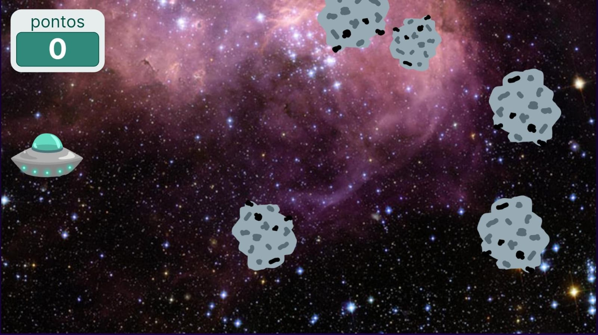

Destroi Asteroides
Criador: Paulo André
🕮 GUIA
O jogo 'Destrói Asteroides' é simples e muito divertido! O jogador controla uma nave com os movimentos do próprio dispositivo e a nave atira ao tocar na tela. O objetivo do jogo é conseguir a maior pontuação possível destruindo os asteroides, ao passo que o jogador desvia deles para se manter vivo no jogo. Divirta-se!